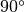

Media¶
Contents
Introduction¶
skrf supports the microwave network synthesis based on transmission line models. Network creation is accomplished through methods of the Media class, which represents a transmission line object for a given medium. Once constructed, a Media object contains the neccesary properties such as propagation constant and characteristic impedance, that are needed to generate microwave circuits.
This tutorial illustrates how created Networks using several different Media objects. The basic usage is,
In [1]: import skrf as rf
In [2]: freq = rf.Frequency(75,110,101,'ghz')
In [3]: cpw = rf.media.CPW(freq, w=10e-6, s=5e-6, ep_r=10.6)
In [4]: cpw.line(100*1e-6, name = '100um line')
Out[4]: 2-Port Network: '100um line', 75-110 GHz, 101 pts, z0=[ 50.06074662+0.j 50.06074662+0.j]
More detailed examples illustrating how to create various kinds of Media objects are given below.
Warning
The network creation and connection syntax of skrf are cumbersome if you need to doing complex circuit design. For a this type of application, you may be interested in using QUCS instead. skrf‘s synthesis cabilities lend themselves more to scripted applications such as Design Optimization or batch processing.
Media’s Supported by skrf¶
The base-class, Media, is constructed directly from values of propagation constant and characteristic impedance. Specific instances of Media objects can be created from relevant physical and electrical properties. Below is a list of mediums types supported by skrf,
Creating Media Objects¶
Typically, network analysis is done within a given frequency band. When a Media object is created, it must be given a Frequency object. This prevent having to repitously provide frequency information for each new network created.
Coplanar Waveguide¶
Here is an example of how to initialize a coplanar waveguide [1] media. The instance has a 10um center conductor, gap of 5um, and substrate with relative permativity of 10.6,
In [1]: import skrf as rf
In [2]: freq = rf.Frequency(75,110,101,'ghz')
In [3]: cpw = rf.media.CPW(freq, w=10e-6, s=5e-6, ep_r=10.6)
In [4]: cpw
Out[4]:
Coplanar Waveguide Media. 75-110 GHz. 101 points
W= 1.00e-05m, S= 5.00e-06m
See CPW for details on that class.
Freespace¶
Here is another example, this time constructing a plane-wave in freespace from 10-20GHz
In [1]: freq = rf.Frequency(10,20,101,'ghz')
In [2]: fs = rf.media.Freespace(freq)
In [3]: fs
Out[3]: Freespace Media. 10-20 GHz. 101 points
See Freespace for details.
Rectangular Waveguide¶
or a WR-10 Rectangular Waveguide
In [1]: freq = rf.Frequency(75,110,101,'ghz')
In [2]: wg = rf.media.RectangularWaveguide(freq, a=100*rf.mil,z0=50) # see note below about z0
In [3]: wg
Out[3]:
Rectangular Waveguide Media. 75-110 GHz. 101 points
a= 2.54e-03m, b= 1.27e-03m
See RectangularWaveguide for details.
Note
The z0 argument in the Rectangular Waveguide constructor is used to force a specifc port impedance. This is commonly used to match the port impedance to what a VNA stores in a touchstone file. See media.Media.__init__() for more information.
Working with Media’s¶
Once constructed, the pertinent wave quantities of the media such as propagation constant and characteristic impedance can be accessed through the properties propagation_constant and characteristic_impedance. These properties return complex numpy.ndarray‘s,
In [1]: cpw.propagation_constant[:3]
Out[1]: array([ 0.+3785.59740815j, 0.+3803.26352939j, 0.+3820.92965062j])
In [2]: cpw.characteristic_impedance[:3]
Out[2]: array([ 50.06074662+0.j, 50.06074662+0.j, 50.06074662+0.j])
As an example, plot the cpw’s propagation constant vs frequency.
In [1]: plot(cpw.frequency.f_scaled, cpw.propagation_constant.imag);
In [2]: xlabel('Frequency [GHz]');
In [3]: ylabel('Propagation Constant [rad/m]');
Because the wave quantities are dynamic they change when the attributes of the cpw line change. To illustrate this, plot the propagation constant of the cpw for various values of substrated permativity,
In [1]: figure();
In [2]: for ep_r in [9,10,11]:
...: cpw.ep_r = ep_r
...: plot(cpw.frequency.f_scaled, cpw.propagation_constant.imag, label='er=%.1f'%ep_r)
...:
In [3]: xlabel('Frequency [GHz]');
In [4]: ylabel('Propagation Constant [rad/m]');
In [5]: legend();
In [6]: cpw.ep_r = 10.6
Network Synthesis¶
Networks are created through methods of a Media object. Here is a brief list of some generic network components skrf supports,
Usage of these methods can is demonstrated below.
To create a 1-port network for a rectangular waveguide short,
In [1]: wg.short(name = 'short')
Out[1]: 1-Port Network: 'short', 75-110 GHz, 101 pts, z0=[ 50.+0.j]
Or to create a  section of cpw line,
In [1]: cpw.line(d=90,unit='deg', name='line')
Out[1]: 2-Port Network: 'line', 75-110 GHz, 101 pts, z0=[ 50.06074662+0.j 50.06074662+0.j]
Building Cicuits¶
By connecting a series of simple circuits, more complex circuits can be made. To build a the delay short, in the rectangular waveguide media defined above.
In [1]: delay_short = wg.line(d=90,unit='deg') ** wg.short()
In [2]: delay_short.name = 'delay short'
In [3]: delay_short
Out[3]: 1-Port Network: 'delay short', 75-110 GHz, 101 pts, z0=[ 50.+0.j]
When Networks with more than 2 ports need to be connected together, use rf.connect(). To create a two-port network for a shunted delayed open, you can create an ideal 3-way splitter (a ‘tee’) and conect the delayed open to one of its ports,
In [1]: tee = cpw.tee()
In [2]: delay_open = cpw.delay_open(40,'deg')
In [3]: shunt_open = rf.connect(tee,1,delay_open,0)
If a specific circuit is created frequenctly, it may make sense to use a function to create the circuit. This can be done most quickly using lamba
In [1]: delay_short = lambda d: wg.line(d,'deg')**wg.short()
In [2]: delay_short(90)
Out[2]: 1-Port Network: '', 75-110 GHz, 101 pts, z0=[ 50.+0.j]
This is how many of skrf‘s network creation methods are made internally.
A more useful example may be to create a function for a shunt-stub tuner, that will work for any media object
In [1]: def shunt_stub(med, d0, d1):
...: return med.line(d0,'deg')**med.shunt_delay_open(d1,'deg')
...:
In [2]: shunt_stub(cpw,10,90)
Out[2]: 2-Port Network: '', 75-110 GHz, 101 pts, z0=[ 50.06074662+0.j 50.06074662+0.j]
Design Optimization¶
The abilities of scipy‘s optimizers can be used to automate network design. In this example, skrf is used to automate the single stub design. First, we create a ‘cost’ function which returns somthing we want to minimize, such as the reflection coefficient magnitude at band center. Then, one of scipy’s minimization algorithms is used to determine the optimal parameters of the stub lengths to minimize this cost.
In [1]: from scipy.optimize import fmin
# the load we are trying to match
In [2]: load = cpw.load(rf.zl_2_Gamma0(z0=50,zl=100))
# single stub circuit generator function
In [3]: def shunt_stub(med, d0, d1):
...: return med.line(d0,'deg')**med.shunt_delay_open(d1,'deg')
...:
# define the cost function we want to minimize (this uses sloppy namespace)
In [4]: def cost(d):
...: return (shunt_stub(cpw,d[0],d[1]) ** load)[100].s_mag.squeeze()
...:
# initial guess of optimal delay lengths in degrees
In [5]: d0 = 120,40 # initial guess
#determine the optimal delays
In [6]: d_opt = fmin(cost,(120,40))
Optimization terminated successfully.
Current function value: 0.333333
Iterations: 65
Function evaluations: 140
In [7]: d_opt
Out[7]: array([ 1.74945025e+02, -9.55405994e-08])

Table Of Contents
Previous topic
Next topic
Visualizing a Single Stub Matching Network